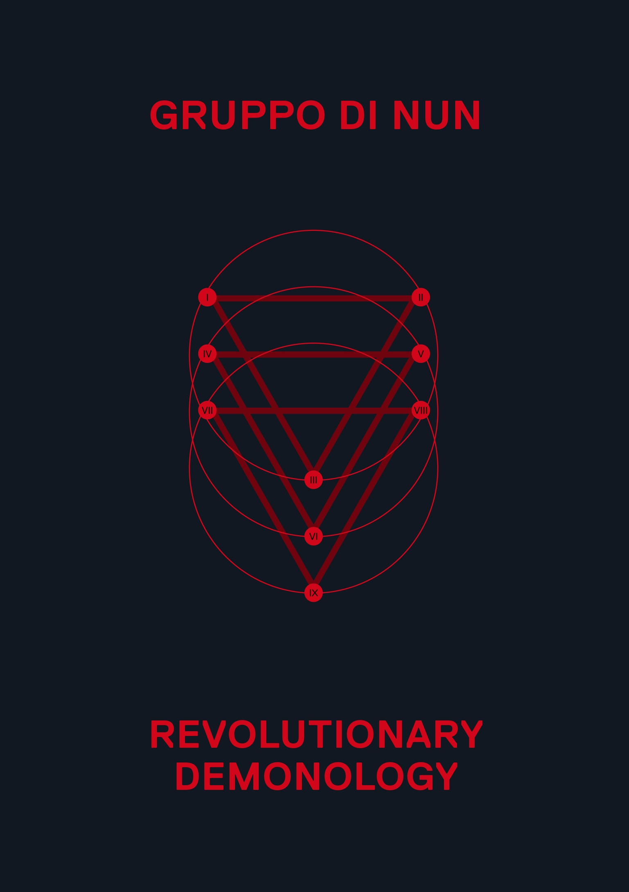
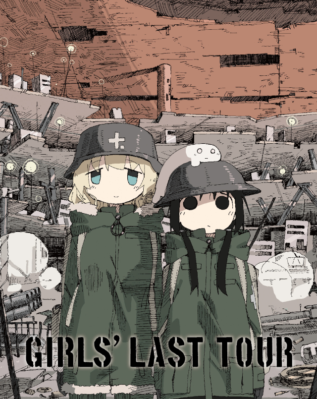
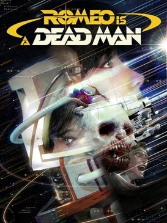

F
hi!!! i'm ethan j
a cyber angel from the life dimension, trapped in mortal flesh and wielding the power of
INFINITE LOVE.
on the internet I go by computer games, chillerbag, ars arcanum, or drones in the sky over new jersey.
I'm a software engineer increasingly trying to become better at my creative pursuits in and outside
programming as I find it the ultimate fulfilment.
This site is raw html, css, and js. I want to do more
of it in js but I don't have any concrete ideas right now. It's also still under construction!
Every other day I'm wonderin:
what's a human being gotta be like?
what's a way to just be competent?
these sweet instincts
ruin my life.
Z
currently reading
Essential works of Foucault. I think its an important time in history to be learning about power structures and applying the thinking of people like Foucault to how we navigate everyday life. Extremely insightful, and highly reccomend. It's a very nuanced view of power as an essence of being, more than just a tool of suppression. A great follow up to Bataille.
Y
currently watching
Girls' Last Tour. It's cute! not got that many thoughts atp. It's nice to think that after the end of everything you'll at least have a friend to keep you company amidst the weight that nothing matters anymore and never will again. Its about being there for each other, even if thats just messing around.
I
currently playing
Fire Emblem Awakening!!! This game rules. I really do enjoy the characters and their interaction, and I couldn't have gotten into it without that element. I really don't want any of my little guys to die! The characters are so great that it makes you really delve into the depths of the strategy in this game, because you don't wanna lose them and interactions with them! (esp if you have headcanons about who will marry who and second gen units).
